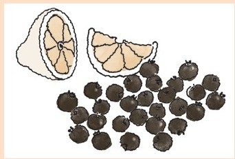

我将会以一个证明和一个布丁结束这本书的写作。两者都是核心，用的材料都惊人的少。每个都用自己的方式让人觉得酷毙了，也不可思议。
证明
我在上大学时出于好玩，决定提出一个数学定义“美好集”。
堪称美好的集其实是关于什么的呢？我想，一个美好集不应该有任何坏东西在里面，例如，它的真子集不应该是坏的。真子集是一个子集，不是全集。例如，集{a、b}有4个子集：{}、{a}、{b}、{a、b}，但是其中只有3个是真子集——最后一个子集不是真子集，因为它是个全集。
因此，真子集不应该是坏的，这样就意味着它们是美好的！这个想法引出这样一个定义：
定义：一个集，当且仅当其所有真子集是好的，这个集就是美好集。
但是，这是一个荒谬的定义！我用“美好”一词对美好下定义。这怎么能说得通呢？
但是无论荒谬与否，这个定义真的产生了结果。
定理：所有有限集是美好的。
证明：假设定理是错误的。我们会看到这个假设会将我们引向矛盾、不可能。这就向我们证明了这个定理不能是错误的，必须是正确的。
因此，假设这个定理是错误的，那么一定会有不美好的有限集。设Z为最小的不美好有限集。因为Z不美好，那它一定有一个真子集，W，是不美好的。因为Z是有限集，W比Z小（记住W不等于Z）。
但是我们选择Z作为最小的不美好集，这就意味着所有比Z小的集都是美好的！因此W是美好的。这是个矛盾！
因此，这个定理不能是错的，所以一定是正确的！
Q.E.D.
布丁
想象一下，一个只需要三种材料的布丁。你把材料放在一起，就让它们自己待着。你不用烹饪，不用留心查看，也不用给它们任何指导或者建议。但不知何故，它们知道该做什么。它们会凝结定形，成为布丁。
蓝莓慕斯

1杯蓝莓
1个大柠檬
3汤匙糖
蓝莓清洗干净后沥干水分，去掉所有根蒂。将蓝莓放入搅拌机，加入磨碎的柠檬皮和柠檬汁。加入糖。
混合。
将混合的材料倒入6个高脚杯或者奶油杯。用塑料保鲜膜盖住，放入冰箱冷藏。
这就行了。
一个证明和一个布丁。
都很简单，都会让你好奇为什么它们能行。